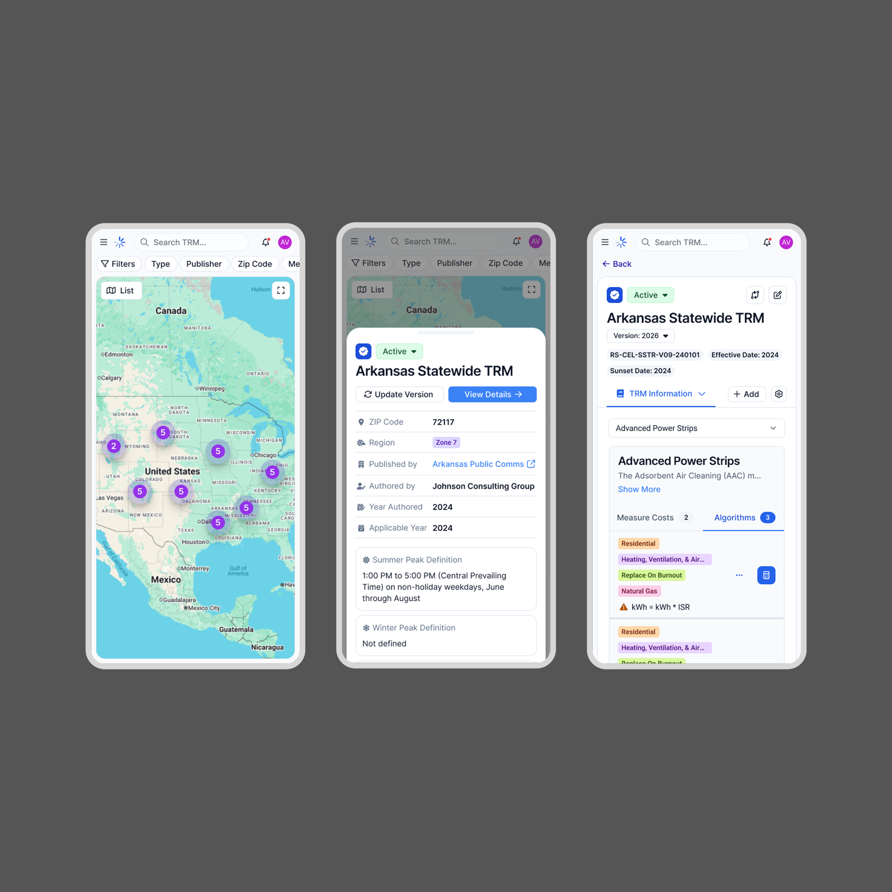
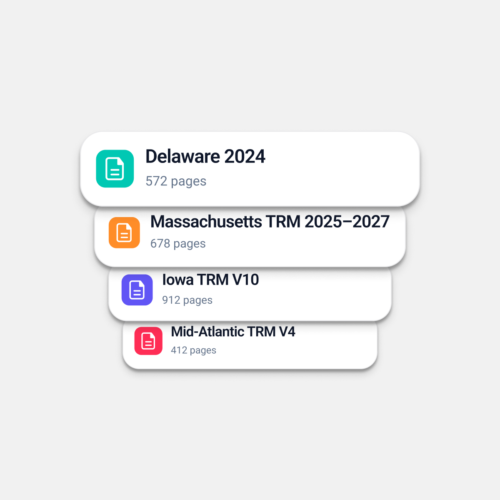
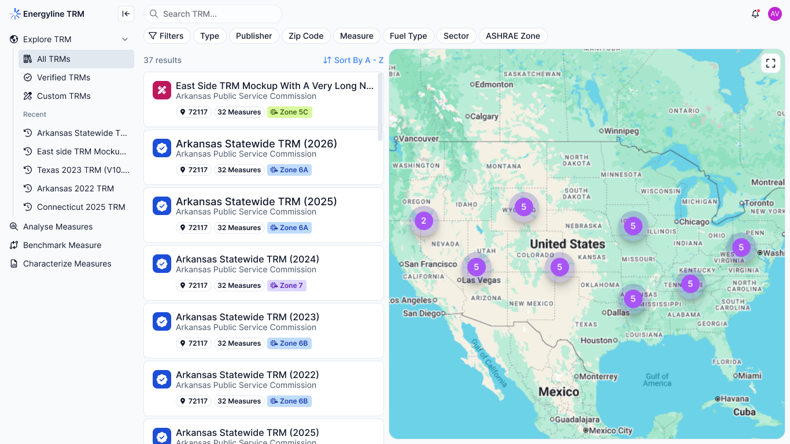
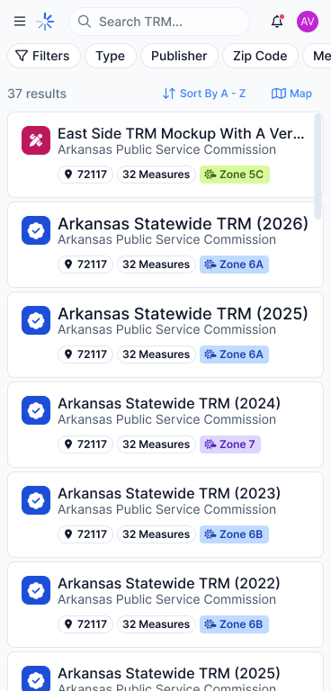
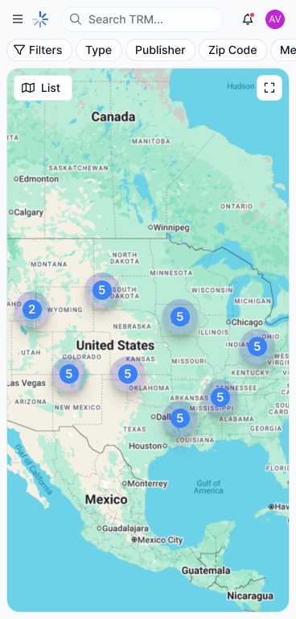
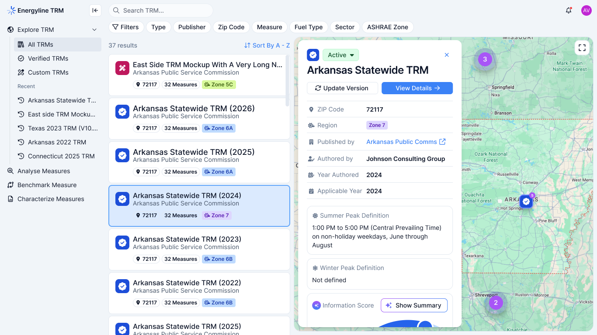
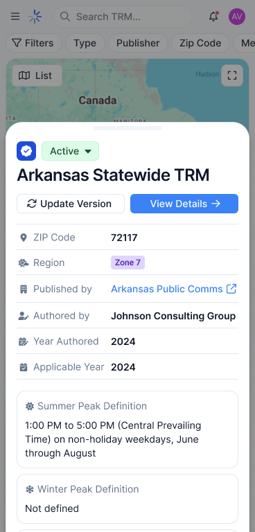
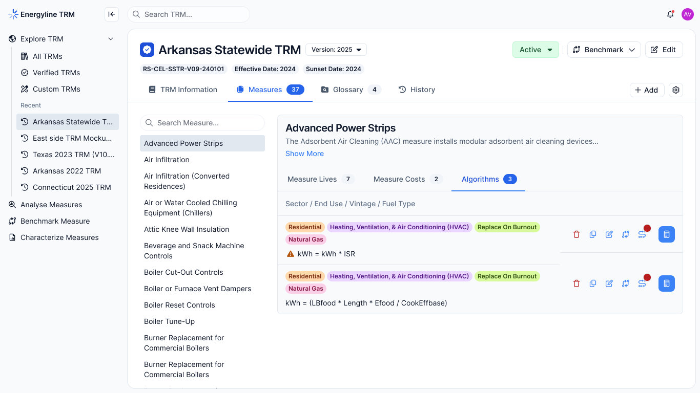
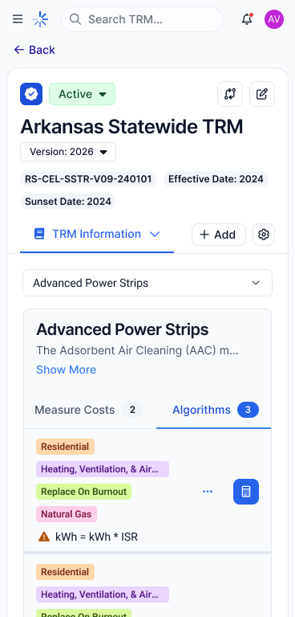

Emergn / Energyline
EnergylineTRM MVP
Designing an MVP that helps energy professionals discover, preview, and navigate technical reference manuals across desktop and mobile.
Role:
Product Designer
Tags:
Product Designer
Information Architecture
Responsive Design
Interaction Design
Overview
Making technical information accessible
EnergyTRM was designed to help energy professionals access and explore Technical Reference Manuals (TRMs) — extensive documents containing technical information, measures, and algorithms used across the energy industry.
The MVP focused on making these resources easier to discover and navigate, connecting document browsing, previews, and detailed content exploration in one experience.

The challenge
Finding information within complex documents
TRMs contain large volumes of technical information, often organized across multiple sections and algorithms. Finding relevant content requires users to understand document structure and navigate through extensive material.
The challenge was to create an experience that made this information easier to discover without overwhelming users with document complexity.
Key Challenges
Document discovery
Finding relevant TRMs among available resources.
Information density
Making extensive technical content easier to understand.
Content navigation
Helping users move between documents, sections, and algorithms.
Responsive access
Preserving usability across desktop and mobile devices.
Shaping the MVP
From document complexity to structured exploration
I organized the experience around three main stages, creating a clear path from discovering a resource to exploring its technical content.
This structure established the foundation for the MVP and guided the main interaction flows.
01 — Discover
Browse available TRMs through a structured list and interactive map, helping users identify relevant documents.
02 — Preview
Review document details before opening the full manual, giving users context without requiring them to navigate the entire document.
03 — Explore
Access the complete document and browse its algorithms through a more focused reading and navigation experience.
The browsing experience
Connecting document discovery with geographic context
The homepage combines a TRM list with an interactive map, offering two complementary ways to explore available resources.
The list provides structured access to documents, while the map adds geographic context to the browsing experience.
Scroll to view all
Key design decisions:
- Keep document information visible and easy to scan.
- Connect map selections with corresponding TRM entries.
- Support browsing through both structured information and geographic context.
- Adapt the browsing experience to smaller screens.
Desktop and mobile
The desktop layout makes use of available space to display the list and map side by side. On mobile, the experience prioritizes focused browsing and accessible navigation.
Desktop

Mobile


From preview to full document
Giving users context before deeper exploration
Opening an extensive technical document should not be the first step in understanding its relevance.
I designed a preview experience that allows users to inspect TRM details before moving into the complete document.


This creates a more progressive experience: users first identify a resource, understand its details, and then access its full technical content.
The full-screen view provides dedicated space for reading, reducing distractions from the browsing interface.
Organizing technical information
Making algorithms easier to navigate
TRMs contain extensive technical content, with algorithms representing an important part of their structure.Rather than treating each document as a single block of information, the experience provides a way to navigate its algorithms and explore specific content.
The goal was to make technical information easier to access without requiring users to repeatedly scan entire documents.
Design priorities:
- Make algorithms easier to identify within each TRM.
- Establish clearer content hierarchy.
- Support navigation between document content and individual algorithms.
- Preserve a consistent exploration experience across desktop and mobile.


Responsive experience
One product, different browsing contexts
Mobile was considered as part of the product experience, not simply a smaller version of the desktop interface.
The challenge was preserving access to document discovery, previews, and technical content while adapting layouts and navigation to limited screen space.
Both experiences follow the same product logic while adapting interactions to their respective contexts.
Desktop
・Side-by-side list and map browsing.
・More space for document information and previews.
・Dedicated reading experience.
Mobile
・Focused document browsing.
・Adapted navigation and content hierarchy.
・Accessible document previews and algorithm exploration.
Outcome
A structured foundation for technical document exploration
The MVP brought document discovery, geographic browsing, document previews, and algorithm navigation into one connected experience. By organizing information into progressive levels of exploration, EnergyTRM established a clearer way for energy professionals to access extensive technical resources across desktop and mobile.
The project reinforced an important design principle: making complex products easier to use starts with making their information easier to understand.
What I learned
Designing document-heavy products requires more than organizing screens. It requires understanding how information is structured, what users need at each stage, and how to expose complexity without overwhelming them.
EnergyTRM reinforced the value of information architecture and progressive disclosure when designing products built around large amounts of technical content.